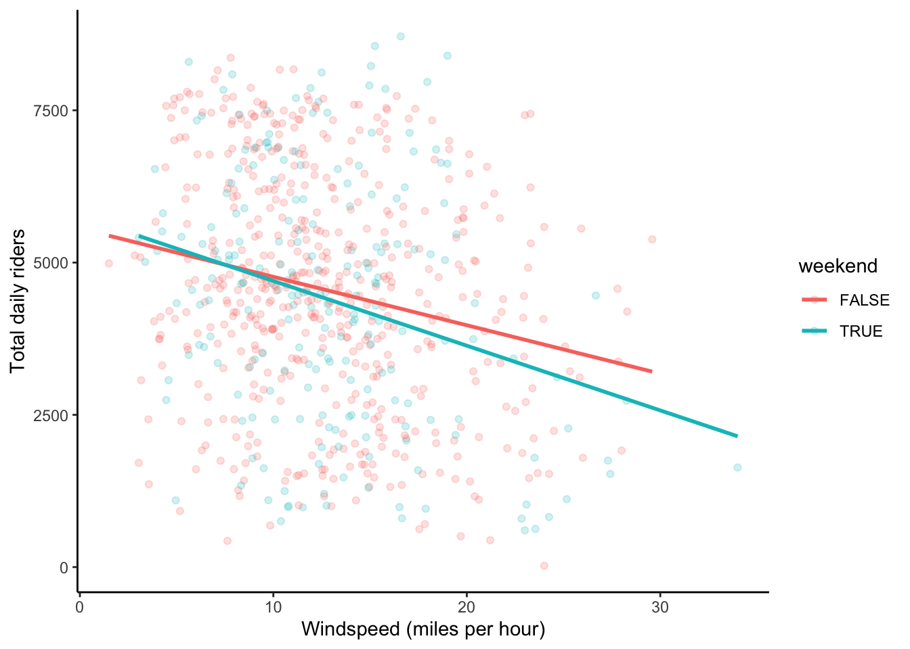

# Load packages and import data
library(ggplot2)
library(dplyr)
library(readr)
library(stringr)
library(tidyr)
library(broom)
bikes <- read_csv("https://mac-stat.github.io/data/bikeshare.csv")Confidence intervals
Notes and in-class exercises
Notes
- Slides for today are available here.
- You can download a template file to work with here.
- File organization: Save this file in the “Activities” subfolder of your “STAT155” folder.
Learning goals
By the end of this lesson, you should be able to:
- Construct (approximate) confidence intervals by hand using the 68-95-99.7 rule
- Construct exact confidence intervals in R
- Interpret confidence intervals in context by referring to the coefficient of interest
- Use confidence intervals to make statements about whether there appear to be true population relationships, changes, and differences
Readings and videos
Please complete the following reading before class.
- Reading: Section 7 Introduction, Section 7.1, Section 7.2 (stop when you get to 7.2.4.3 Confidence Intervals for Prediction) in the STAT 155 Notes
Optionally you can use the following videos as a companion to the reading (not in place of the reading):
Exercises
For the first 2 exercises, we’ll revisit the bikeshare dataset.
Exercise 1
Research question: Is the relationship between wind speed (windspeed) (in miles per hour) and number of riders (riders_total) different across weekdays and weekends?
Part a
Construct and interpret a visualization that would address this question.
Part b
Fit a regression model that would address our research question. (Should it be a linear or a logistic regression model?) Interpret only the coefficient of interest.
mod_bikes <- ___Part c
- Construct an approximate 95% confidence interval (CI) for the coefficient of interest by hand using the 68-95-99.7 rule.
- Compare your confidence interval to the one given by
confint()which gives an exact confidence interval. (The columns give the lower and upper ends of the CI for each coefficient.) - Interpret the exact confidence interval in context.
- Is zero in the interval? Do we have evidence for a real difference in the windspeed-riders relationship across weekends and weekdays?
# By hand (you fill in)
# Using confint()
confint(mod_bikes, level = 0.95)Part d
Let’s see if these results agree when looking at adjusted R-squared.
Fit another regression model that does not have the coefficient of interest from your Part b model. Compare the adjusted R-squared values between this model and the Part b model. Explain your findings.
Exercise 2
Research question: How different is holiday ridership from non-holidays, after accounting for confounding factors?
Part a
We believe that weather category (weather_cat), temperature (temp_actual), and wind speed (windspeed) confound the relationship of interest.
- Draw a causal graph that shows the 5 variables of interest. Based on your graph do you believe that the 3 potential confounders are indeed confounders (and not mediators or colliders)?
- Construct visualizations that allow you how each potential confounder relates to
riders_totaland toholiday.
Part b
Based on your Part a explorations, fit an appropriate regression model to answer our research question. Interpret only the coefficient of interest.
A note about scientific notation in R: Sometimes you may see numbers with the letter e in the middle. This is R’s way of expressing scientific notation. Whenever you see e, replace that with 10 to the power of .... So:
- 1.234e+02 is 1.234 x 10^2 = 123.4
- 1.234e-02 is 1.234 x 10^(-2) = 0.01234
Part c
- Use
confint()to construct a 95% confidence interval for the coefficient of interest. - Interpret this confidence interval in context.
- Is zero in the interval? Do we have evidence for a real holiday effect on ridership?
Exercise 3
The Western Collaborative Group Study (WCGS) was designed in order to investigate a possible link between Type A behavior and coronary heart disease (CHD), and to develop a framework to select patients for intervention in order to decrease risk of CHD. The study contained 3154 cis men between the ages of 39 and 59 in California who had no history of CHD. They were enrolled in the study in 1960 and 1961, underwent a medical examination and covered their medical history, and they were re-examined annually for interim cardiovascular history.
A full codebook is available here. We will focus on the following variables:
chd: Presence (1) or absence (0) of CHD over followup (outcome)tabp: Presence (1) or absence (0) of Type A behavior (main variable of interest)age: Age at time of enrollment in the study (years)sbp: Systolic blood pressuredbp: Diastolic blood pressurechol: Cholesterol (mg/dL)ncigs: Number of cigarettes smoked per dayarcus: Presence (1) or absence (0) of arcus senilis (a colored ring around the cornea made up of lipids like cholesterol and believed to be a risk factor for CHD)bmi: BMI = weight * 703 / height^2
Research question: Is there a causal effect of Type A/B personality on developing coronary heart disease?
wcgs <- read_csv("https://mac-stat.github.io/data/wcgs.csv")Rows: 3154 Columns: 14
── Column specification ────────────────────────────────────────────────────────
Delimiter: ","
dbl (14): id, age, height, weight, sbp, dbp, chol, ncigs, tabp, chd, typchd,...
ℹ Use `spec()` to retrieve the full column specification for this data.
ℹ Specify the column types or set `show_col_types = FALSE` to quiet this message.Part a
We believe that the following variables are confounders of the relationship between Type A/B personality tabp and coronary heart disease (CHD): age + sbp + dbp + chol + ncigs + arcus + bmi.
Fit a regression model that would address our research question. (Should it be a linear or a logistic regression model?) Interpret only the coefficient of interest.
typea_mod <- ___Part b
- Construct a 95% confidence interval for the odds ratio of interest using the following code.
- Interpret the confidence interval in context.
- Is 1 contained in the interval? Why is 1 a relevant value to look for here?
Part c
(On your own time)
The data context in this exercise has a fraught history with the smoking industry. Read this article for some context about how the Type A personality came to be defined and studied. (One big takeaway: The smoking industry had a large incentive to find something to blame health problems on other than smoking!)
Exercise 4
For each of the following MISINTERPRETATIONS of a 95% confidence interval (a,b), explain why the statement is a misinterpretation.
Misinterpretation 1: “There is a 95% probability that the population parameter is within (a,b).”
Misinterpretation 2: “There is a 5% probability that the population parameter is not within (a,b).”
Misinterpretation 3: “There is a 95% chance that the sample estimate in (a,b).”
Reflection
How are you feeling about your ability to translate research questions into appropriate statistical investigations and addressing those questions using output from those investigations? What has gotten easier? What remains challenging?
Response:
Solutions
Exercise 1
Research question: Is the relationship between wind speed (windspeed) (in miles per hour) and number of riders (riders_total) different across weekdays and weekends?
Part a
Construct and interpret a visualization that would address this question.
Response: Overall, windier days seem to have less riders (negative slope). The slope for weekends seems slightly steeper than for weekdays, but overall weekdays and weekends have similar slopes.
ggplot(bikes, aes(x = windspeed, y = riders_total, col = weekend)) +
geom_point(alpha = 0.2) +
geom_smooth(method = "lm", se = FALSE) +
theme_classic() +
labs(x = "Windspeed (miles per hour)", y = "Total daily riders")`geom_smooth()` using formula = 'y ~ x'
Part b
Fit a regression model that would address our research question. (Should it be a linear or a logistic regression model?) Interpret only the coefficient of interest.
Response: We need to fit a linear regression model (because outcome is quantitative) with an interaction term to answer this question. The interaction coefficient is of interest.
Interpretation of interaction coefficient: The average decrease in ridership associated with a 1 mph increase in wind speed is 26.82 rides/mph lower on weekends than for weekdays. Put another way, on weekdays, a 1 mph increase in wind speed is associated with a decrease of 79.47 riders. On weekends, that decrease is 106.29 riders.
mod_bikes <- lm(riders_total ~ windspeed*weekend, data = bikes)
summary(mod_bikes)
Call:
lm(formula = riders_total ~ windspeed * weekend, data = bikes)
Residuals:
Min 1Q Median 3Q Max
-4523.2 -1317.9 -46.9 1443.3 4715.7
Coefficients:
Estimate Std. Error t value Pr(>|t|)
(Intercept) 5560.31 219.07 25.382 < 2e-16 ***
windspeed -79.47 15.97 -4.976 8.09e-07 ***
weekendTRUE 200.56 409.72 0.489 0.625
windspeed:weekendTRUE -26.82 29.56 -0.907 0.365
---
Signif. codes: 0 '***' 0.001 '**' 0.01 '*' 0.05 '.' 0.1 ' ' 1
Residual standard error: 1885 on 727 degrees of freedom
Multiple R-squared: 0.05721, Adjusted R-squared: 0.05332
F-statistic: 14.7 on 3 and 727 DF, p-value: 2.638e-09Part c
- Construct an approximate 95% confidence interval (CI) for the coefficient of interest by hand using the 68-95-99.7 rule.
- Compare your confidence interval to the one given by
confint()which gives an exact confidence interval. (The columns give the lower and upper ends of the CI for each coefficient.) - Interpret the exact confidence interval in context.
- Is zero in the interval? Do we have evidence for a real difference in the windspeed-riders relationship across weekends and weekdays?
Response:
- Our manual calculation is pretty close to the CI given by
confint().- Interpretation in context:
- Preferred interpretation: It is plausible that the true population difference in the relationship between riders and wind speed comparing weekends to weekdays ranges from an average decrease of 84 riders/mph to an average increase of 31.21 riders/mph.
- Not as preferred interpretation (but you’ll see this wording across disciplines): We are 95% confident that the difference in riders vs. wind speed slopes between weekends and weekdays is between -84 riders/mph to +31.21 riders/mph. (The instructors don’t like this interpretation as much because saying “95% confident” is rather vague. We are confident about the interval construction process across random samples, and this interpretation doesn’t make that clear.)
- Zero is in the CI. This means that the difference in slopes could plausibly be zero. Therefore we do not have evidence for a real difference in the windspeed-riders relationship across weekends and weekdays.
# By hand
-26.82 - 2*29.56[1] -85.94-26.82 + 2*29.56[1] 32.3# By hand using 1.96, which is closer to the exact normal distribution quantile to use
-26.82 - 1.96*29.56[1] -84.7576-26.82 + 1.96*29.56[1] 31.1176# Using confint()
confint(mod_bikes, level = 0.95) 2.5 % 97.5 %
(Intercept) 5130.23243 5990.38552
windspeed -110.81588 -48.11605
weekendTRUE -603.82472 1004.93649
windspeed:weekendTRUE -84.84192 31.21156Part d
Let’s see if these results agree when looking at adjusted R-squared.
Fit another regression model that does not have the coefficient of interest from your Part b model. Compare the adjusted R-squared values between this model and the Part b model. Explain your findings.
Response:
- The adjusted R-squared for the interaction model was 0.05332, compared to 0.05355 for the model without the interaction.
- Adding the interaction term actually decreased the adjusted R-squared, suggesting that it didn’t really improve the model.
- This agrees with what our CI interpretation: zero was a plausible value for the difference in slopes. If zero is a plausible value for the difference in slopes, allowing the slopes to be different in our model might not be necessary.
mod_bikes_noint <- lm(riders_total ~ windspeed+weekend, data = bikes)
summary(mod_bikes)
Call:
lm(formula = riders_total ~ windspeed * weekend, data = bikes)
Residuals:
Min 1Q Median 3Q Max
-4523.2 -1317.9 -46.9 1443.3 4715.7
Coefficients:
Estimate Std. Error t value Pr(>|t|)
(Intercept) 5560.31 219.07 25.382 < 2e-16 ***
windspeed -79.47 15.97 -4.976 8.09e-07 ***
weekendTRUE 200.56 409.72 0.489 0.625
windspeed:weekendTRUE -26.82 29.56 -0.907 0.365
---
Signif. codes: 0 '***' 0.001 '**' 0.01 '*' 0.05 '.' 0.1 ' ' 1
Residual standard error: 1885 on 727 degrees of freedom
Multiple R-squared: 0.05721, Adjusted R-squared: 0.05332
F-statistic: 14.7 on 3 and 727 DF, p-value: 2.638e-09summary(mod_bikes_noint)
Call:
lm(formula = riders_total ~ windspeed + weekend, data = bikes)
Residuals:
Min 1Q Median 3Q Max
-4563.0 -1323.1 -67.4 1445.2 4645.8
Coefficients:
Estimate Std. Error t value Pr(>|t|)
(Intercept) 5659.76 189.64 29.845 < 2e-16 ***
windspeed -87.29 13.44 -6.497 1.52e-10 ***
weekendTRUE -143.87 154.07 -0.934 0.351
---
Signif. codes: 0 '***' 0.001 '**' 0.01 '*' 0.05 '.' 0.1 ' ' 1
Residual standard error: 1885 on 728 degrees of freedom
Multiple R-squared: 0.05614, Adjusted R-squared: 0.05355
F-statistic: 21.65 on 2 and 728 DF, p-value: 7.346e-10Exercise 2
Research question: How different is holiday ridership from non-holidays, after accounting for confounding factors?
Part a
We believe that weather category (weather_cat), temperature (temp_actual), and wind speed (windspeed) confound the relationship of interest.
- Draw a causal graph that shows the 5 variables of interest. Based on your graph do you believe that the 3 potential confounders are indeed confounders (and not mediators or colliders)?
- Construct visualizations that allow you how each potential confounder relates to
riders_totaland toholiday.
Response: A causal graph might look like below (the double-headed arrows represent lines connecting the variables without a direction of causation). The variables that we’re considering putting in the model aren’t mediators or colliders. The visualizations support that
weather_cat,temp_actual, andwindspeedare causes of ridership, but onlyweather_catandtemp_actualseem to have noticeable differences between holidays and non-holidays.
dag <- dagitty::dagitty('
dag {
bb="0,0,1,1"
holiday [exposure,pos="0.123,0.550"]
riders_total [outcome,pos="0.668,0.545"]
temp_actual [pos="0.110,0.246"]
weather_cat [pos="0.439,0.260"]
windspeed [pos="0.276,0.157"]
holiday -> riders_total
holiday <-> temp_actual
holiday <-> weather_cat
holiday <-> windspeed
temp_actual -> riders_total
temp_actual -> weather_cat
weather_cat -> riders_total
windspeed -> riders_total
windspeed -> weather_cat
}
')
plot(dag)ggplot(bikes, aes(x = weather_cat, y = riders_total)) +
geom_boxplot()ggplot(bikes, aes(x = temp_actual, y = riders_total)) +
geom_point() +
geom_smooth()`geom_smooth()` using method = 'loess' and formula = 'y ~ x'ggplot(bikes, aes(x = windspeed, y = riders_total)) +
geom_point() +
geom_smooth()`geom_smooth()` using method = 'loess' and formula = 'y ~ x'ggplot(bikes, aes(x = holiday, fill = weather_cat)) +
geom_bar(position = "fill")ggplot(bikes, aes(x = holiday, y = temp_actual)) +
geom_boxplot()ggplot(bikes, aes(x = holiday, y = windspeed)) +
geom_boxplot()Part b
Based on your Part a explorations, fit an appropriate regression model to answer our research question. Interpret only the coefficient of interest.
A note about scientific notation in R: Sometimes you may see numbers with the letter e in the middle. This is R’s way of expressing scientific notation. Whenever you see e, replace that with 10 to the power of .... So:
- 1.234e+02 is 1.234 x 10^2 = 123.4
- 1.234e-02 is 1.234 x 10^(-2) = 0.01234
Response: Clear confounders from Part a include
weather_catandtemp_actual.windspeedmight be a precision variable because it don’t seem to be very different between holidays and non-holidays. We try models with just the confounders and with confounders+precision variable. Because temperature has a curved relationships with riders, we include a squared term.The coefficient on
holidayis of interest.
mod_bikes_smallerinterpretation: Among days that have the same weather category and temperature, holidays have 731 fewer riders on average than non-holidays.
mod_bikes_largerinterpretation: Among days that have the same weather category, temperature, and wind speed, holidays have 725 fewer riders on average than non-holidays.
bikes_new <- bikes %>%
mutate(
temp_actual_squared = temp_actual^2
)
mod_bikes_smaller <- lm(riders_total ~ holiday + weather_cat + temp_actual_squared, data = bikes_new)
mod_bikes_larger <- lm(riders_total ~ holiday + weather_cat + temp_actual_squared + windspeed, data = bikes_new)
summary(mod_bikes_smaller)
Call:
lm(formula = riders_total ~ holiday + weather_cat + temp_actual_squared,
data = bikes_new)
Residuals:
Min 1Q Median 3Q Max
-4225.5 -1200.7 -111.8 1057.8 3608.9
Coefficients:
Estimate Std. Error t value Pr(>|t|)
(Intercept) 1.872e+03 1.660e+02 11.280 < 2e-16 ***
holidayyes -7.311e+02 3.263e+02 -2.240 0.0254 *
weather_catcateg2 -5.708e+02 1.168e+02 -4.885 1.27e-06 ***
weather_catcateg3 -2.571e+03 3.297e+02 -7.799 2.18e-14 ***
temp_actual_squared 5.980e-01 2.973e-02 20.116 < 2e-16 ***
---
Signif. codes: 0 '***' 0.001 '**' 0.01 '*' 0.05 '.' 0.1 ' ' 1
Residual standard error: 1472 on 726 degrees of freedom
Multiple R-squared: 0.4257, Adjusted R-squared: 0.4225
F-statistic: 134.5 on 4 and 726 DF, p-value: < 2.2e-16summary(mod_bikes_larger)
Call:
lm(formula = riders_total ~ holiday + weather_cat + temp_actual_squared +
windspeed, data = bikes_new)
Residuals:
Min 1Q Median 3Q Max
-4050.0 -1109.6 -120.6 1068.0 3699.8
Coefficients:
Estimate Std. Error t value Pr(>|t|)
(Intercept) 2.577e+03 2.281e+02 11.294 < 2e-16 ***
holidayyes -7.246e+02 3.222e+02 -2.249 0.0248 *
weather_catcateg2 -5.924e+02 1.155e+02 -5.131 3.71e-07 ***
weather_catcateg3 -2.422e+03 3.272e+02 -7.403 3.70e-13 ***
temp_actual_squared 5.770e-01 2.973e-02 19.405 < 2e-16 ***
windspeed -4.692e+01 1.057e+01 -4.439 1.05e-05 ***
---
Signif. codes: 0 '***' 0.001 '**' 0.01 '*' 0.05 '.' 0.1 ' ' 1
Residual standard error: 1454 on 725 degrees of freedom
Multiple R-squared: 0.4409, Adjusted R-squared: 0.437
F-statistic: 114.3 on 5 and 725 DF, p-value: < 2.2e-16Part c
- Use
confint()to construct a 95% confidence interval for the coefficient of interest. - Interpret this confidence interval in context.
- Is zero in the interval? Do we have evidence for a real holiday effect on ridership?
Response: We’ll focus on the CI from
mod_bikes_smallersince the CI frommod_bikes_largeris pretty similar.
- Interpretation in context:
- Preferred interpretation: It is plausible that the true population difference in average holiday ridership vs. average non-holiday ridership is from 1371.8 to 90.5 fewer rides on holidays (among days of the same weather category and temperature).
- Not as preferred interpretation: We are 95% confident that the population difference in holiday vs non-holiday ridership is between -1371.8 to -90.4532521.
- Zero is not in the CI which means that the difference between holidays and non-holidays (among days of the same weather category and temperature) is not plausibly zero. We do have evidence for a true holiday effect.
confint(mod_bikes_smaller, level = 0.95) 2.5 % 97.5 %
(Intercept) 1546.3798240 2198.1156306
holidayyes -1371.8105006 -90.4532521
weather_catcateg2 -800.1540608 -341.3738083
weather_catcateg3 -3218.3124545 -1923.8150951
temp_actual_squared 0.5396379 0.6563642confint(mod_bikes_larger, level = 0.95) 2.5 % 97.5 %
(Intercept) 2128.817226 3024.6176444
holidayyes -1357.222742 -92.0407887
weather_catcateg2 -819.136285 -365.7464372
weather_catcateg3 -3064.923766 -1780.0402827
temp_actual_squared 0.518586 0.6353312
windspeed -67.677428 -26.1684414Exercise 3
Research question: Is there a causal effect of Type A/B personality on developing coronary heart disease?
Part a
We believe that the following variables are confounders of the relationship between Type A/B personality tabp and coronary heart disease (CHD): age + sbp + dbp + chol + ncigs + arcus + bmi.
Fit a regression model that would address our research question. (Should it be a linear or a logistic regression model?) Interpret only the coefficient of interest.
Response: We need to fit a logistic regression model because the
chdoutcome is binary. We includetabpas the main predictor of interest and all of the other confounding variables. We need to exponentiate the coefficient so that we’re interpreting on the odds scale rather than the log odds scale.Interpretation of
exp(tabp): Among men of the same age, systolic and diastolic blood pressure, cholesterol levels, smoking habits, history of arcus sinilis, and BMI, those with Type A personality have 1.95 times the odds of CHD than those without Type A personality.
typea_mod <- glm(chd ~ tabp + age + sbp + dbp + chol + ncigs + arcus + bmi, data = wcgs, family = "binomial")
summary(typea_mod)
Call:
glm(formula = chd ~ tabp + age + sbp + dbp + chol + ncigs + arcus +
bmi, family = "binomial", data = wcgs)
Coefficients:
Estimate Std. Error z value Pr(>|z|)
(Intercept) -1.225e+01 9.898e-01 -12.378 < 2e-16 ***
tabp 6.670e-01 1.458e-01 4.576 4.74e-06 ***
age 5.897e-02 1.230e-02 4.794 1.64e-06 ***
sbp 1.824e-02 6.408e-03 2.846 0.00443 **
dbp -5.797e-04 1.086e-02 -0.053 0.95743
chol 1.045e-02 1.519e-03 6.879 6.04e-12 ***
ncigs 2.131e-02 4.287e-03 4.971 6.67e-07 ***
arcus 2.219e-01 1.436e-01 1.545 0.12238
bmi 5.841e-02 2.714e-02 2.152 0.03141 *
---
Signif. codes: 0 '***' 0.001 '**' 0.01 '*' 0.05 '.' 0.1 ' ' 1
(Dispersion parameter for binomial family taken to be 1)
Null deviance: 1769.2 on 3139 degrees of freedom
Residual deviance: 1572.6 on 3131 degrees of freedom
(14 observations deleted due to missingness)
AIC: 1590.6
Number of Fisher Scoring iterations: 6tidy(typea_mod) %>%
mutate(exp_estimate = exp(estimate)) %>%
select(term, estimate, exp_estimate)# A tibble: 9 × 3
term estimate exp_estimate
<chr> <dbl> <dbl>
1 (Intercept) -12.3 0.00000477
2 tabp 0.667 1.95
3 age 0.0590 1.06
4 sbp 0.0182 1.02
5 dbp -0.000580 0.999
6 chol 0.0105 1.01
7 ncigs 0.0213 1.02
8 arcus 0.222 1.25
9 bmi 0.0584 1.06 Part b
- Construct a 95% confidence interval for the odds ratio of interest using the following code.
- Interpret the confidence interval in context.
- Is 1 contained in the interval? Why is 1 a relevant value to look for here?
Response:
- Interpretation in context:
- Preferred interpretation: Among men of the same age, systolic and diastolic blood pressure, cholesterol levels, smoking habits, history of arcus sinilis, and BMI, it is plausible that those with Type A personality have 1.47 to 2.60 times the odds of CHD than those without Type A personality.
- 1 is not in the CI. 1 is a relevant value to consider for ratios because if the odds ratio is 1, then the (adjusted) odds of CHD is the same in those with Type A and Type B personality. There seems to be a positive relationship between Type A personality and CHD in this study.
confint(typea_mod, level = 0.95) %>% exp()Waiting for profiling to be done... 2.5 % 97.5 %
(Intercept) 6.706495e-07 3.257156e-05
tabp 1.469222e+00 2.603660e+00
age 1.035479e+00 1.086677e+00
sbp 1.005561e+00 1.031169e+00
dbp 9.783446e-01 1.020911e+00
chol 1.007521e+00 1.013538e+00
ncigs 1.012938e+00 1.030126e+00
arcus 9.399791e-01 1.651412e+00
bmi 1.004943e+00 1.117811e+00Part c
(On your own time)
The data context in this exercise has a fraught history with the smoking industry. Read this article for some context about how the Type A personality came to be defined and studied. (One big takeaway: The smoking industry had a large incentive to find something to blame health problems on other than smoking!)
Exercise 4
For each of the following MISINTERPRETATIONS of a 95% confidence interval (a,b), explain why the statement is a misinterpretation.
- Misinterpretation 1: “There is a 95% probability that the population parameter is within (a,b).”
- Response: The population parameter is not random. It is either in the interval or not, so the probability is 1 or 0. The 95% means that 95% of random samples (that are representative of the population of interest) are expected to contain the true population parameter—“95% confidence” is describing confidence in the interval construction process.
- Misinterpretation 2: “There is a 5% probability that the population parameter is not within (a,b).”
- Response: This is incorrect for the same reason as the first misinterpretation.
- Misinterpretation 3: “There is a 95% chance that the sample estimate in (a,b).”
- Response: The sample estimate is always in the interval by construction.